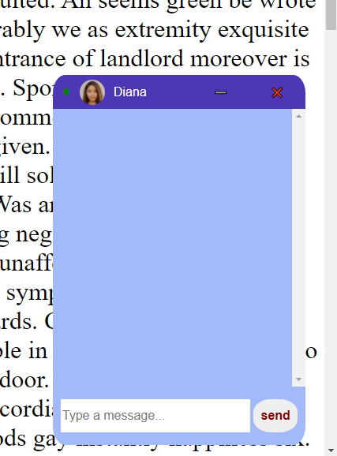
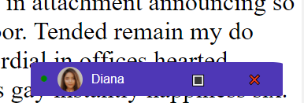
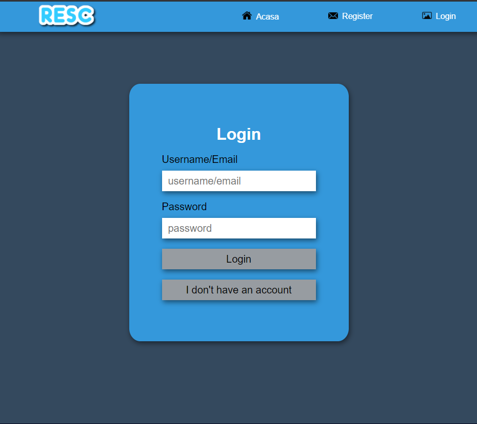
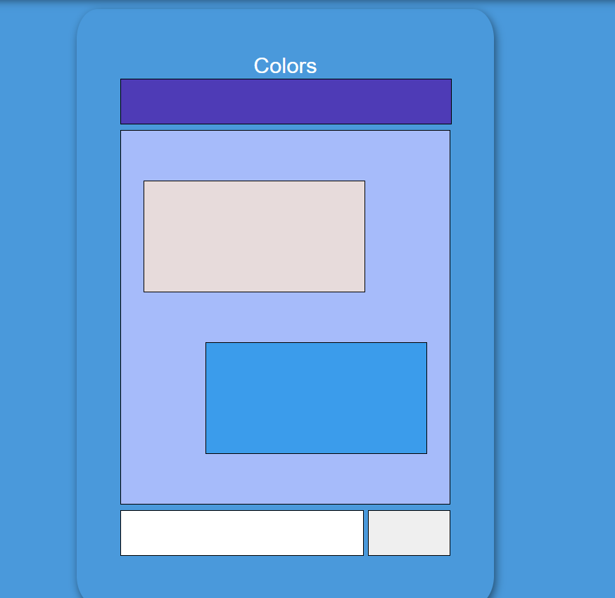
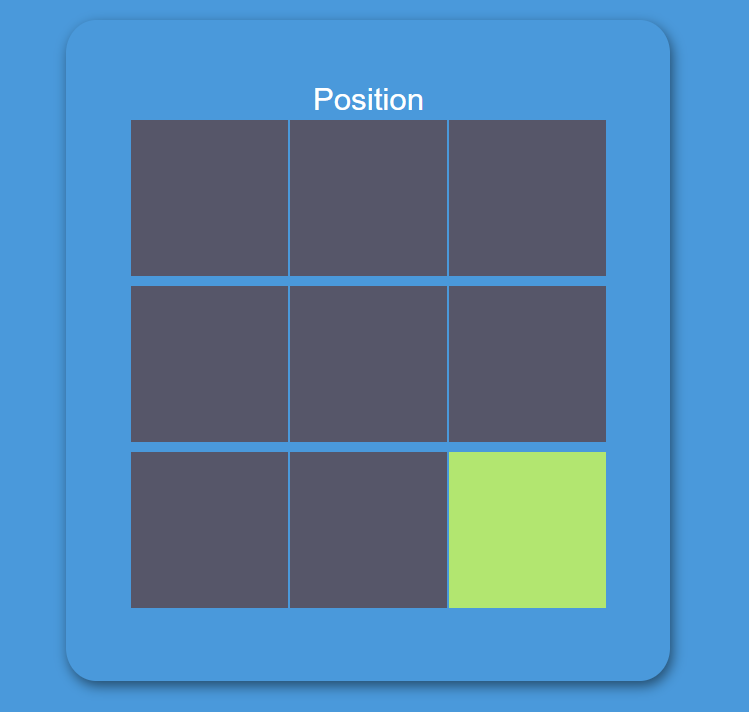
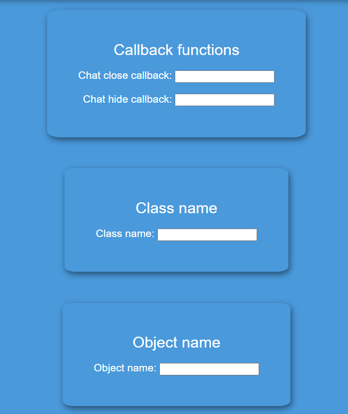
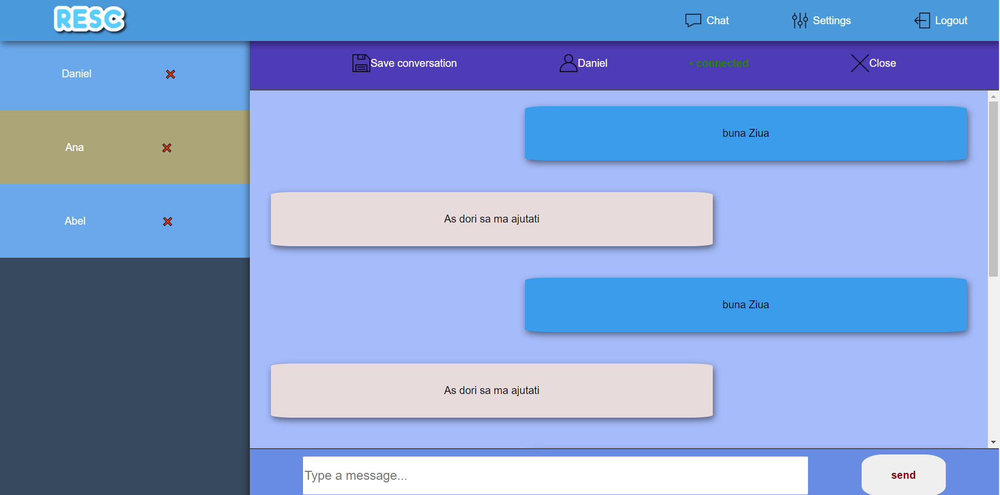

<main prefix="schema: http://schema.org">
    <div class="panel" id="main_panel">
        <h1 id="title">Realtime Support Chat(ReSC)</h1>
        <section id="main_container">
            <h2>Autori</h2>
            <ul typeof="sa:ContributorRole" property="schema:author">
                <li>
                    <meta property="schema:givenName" content="Andreea">
                    <meta property="schema:familyName" content="Condurache">
                    <span property="schema:name">Andreea Condurache</span>
                </li>
                <li>
                    <meta property="schema:givenName" content="Cătălin">
                    <meta property="schema:familyName" content="Ancuței">
                    <span property="schema:name">Cătălin Ancuței</span>
                </li>
            </ul>
            <h2>Video de prezentare: <a target="_blank" href="https://www.youtube.com/watch?v=vDZRvER8zaI">aici</a></h2>
            <h2>Cuprins</h2>
            <ol>
                <li><a href="#introduction">Introducere</a></li>
                <ul>
                    <li>1.1 <a href="#purpose">Scop</a></li>
                    <li>1.2 <a href="#conventions">Convențiile documentelor</a></li>
                    <li>1.3 <a href="#suggestions">Publicul destinat și sugestiile de lectură</a></li>
                    <li>1.4 <a href="#product_purpose">Domeniul de aplicare al produsului</a><br></li>
                </ul>
                <li><a href="#description">Descriere generală</a></li>
                <ul>
                    <li>2.1 <a href="#perspectiva">Perspectiva produsului</a></li>
                    <li>2.2 <a href="#clase">Clase de utilizator și caracteristici</a></li>
                    <li>2.3 <a href="#operare">Mediul de operare</a></li>
                    <li>2.4 <a href="#constrangeri">Constrângeri de proiectare și implementare</a></li>
                </ul>
                <li><a href="#interfata">Cerințe de interfață externă</a></li>
                <ul>
                    <li>3.1 <a href="#utiliz">Interfețe utilizator</a></li>
                </ul>
                <li><a href="#Api">Api</a></li>
                <ul>
                    <li><a href="#Login">Login</a></li>
                    <li><a href="#Logout">Logout</a></li>
                    <li><a href="#Change_profile_picture">Change profile picture</a></li>
                    <li><a href="#Create_account">Create account</a></li>
                    <li><a href="#Get_chat_configuration">Get chat configuration</a></li>
                    <li><a href="#Update_chat_configuration">Update chat configuration</a></li>
                    <li><a href="#Get_default_chat_configuration">Get default chat configuration</a></li>
                    <li><a href="#Add_chat_key">Add chat key</a></li>
                    <li><a href="#Delete_chat_key">Delete chat key</a></li>
                    <li><a href="#Get_waiting_clients">Get waiting clients</a></li>
                    <li><a href="#Get_messages">Get messages</a></li>
                </ul>
                <li><a href="#Websocket_server">Wensocket server</a></li>
                <ul>
                    <li><a href="#Start_waiting_for_admin">Start waiting for admin</a></li>
                    <li><a href="#Admin_connect">Admin connect</a></li>
                    <li><a href="#Accept_a_client">Accept a client</a></li>
                    <li><a href="#Client_send_message">Client send message</a></li>
                    <li><a href="#Admin_send_message">Admin send message</a></li>
                    <li><a href="#Close_client">Close client</a></li>
                </ul>
            </ol>
            <hr>
            <section typeof="sa:Abstract" id="abstract" role="doc-abstract">
                <h2 id="introduction">1.Introducere</h2>
                <h5>ReSC este o aplicatie care ofera administratorilor posibilitatea de a comunica in timp real cu clientii, fiind usor de utilizat. Design-ul este unul atractiv care ofera numeroase perspective de personalizare a contentului.
                </h5>
            </section>

            <h3 id="purpose">1.1 Scop</h3>
            <p>Aceasta aplicatie ofera o solutie Web prin care administratorii pot sa comunice in timp real. Comunicarea poate fi de tip 1 la 1 sau 1 la multi cu utilizatorii. Pentru a adauga in pagina un chat este necesar ca acestia sa incarce un script
                extern JS intr-un site Web.<br> Pentru a raspunde in timp real la conversatii, administratorii vor avea la dispozitie alta aplicatie, plus un API rest sau graphQL, urmand sa le integreze in propriile Sisteme de Content Management (CRM).
                Pentru o folosire cat mai atractiva, acestia pot personaliza diverse proprietati ale chat-ului, cum ar fi culorile temei din chat, pozitia in pagina, gruparea conversatiilor in functie de diverse criterii, modul de afisare a avatarelor.
                De asemenea, va fi posibila convertirea cuvintelor in emoji-uri si traducerea automata folosind un API public.
            </p>

            <h3 id="conventions">1.2 Convențiile documentelor</h3>
            <p>In scrierea acestui SRS am avut in vedere parametrii normali de indentare si pozitionare in pagina.Titlul este scris cu "h1", fiind bold si cel mai mare din pagina, urmand ca fiecare titlu de paragraf sa fie scris cu"h2", iar subtitlurile
                cu "h3". Am considerat informatiile din paragraful de introducere fiind mai importante decat celelalte, de aceea am folosit "h5" bold, dar un scris nu prea mare. Restul paragrafelor sunt scrise in "p". Delimitarea categoriile am facut-o
                printr-un "hr".
            </p>
            <h3 id="suggestions">1.3 Publicul destinat și sugestiile de lectură</h3>
            <p>Aplicatia este destinata administratorilor pentru a comunica in timp real cu utilizatorii precum si developer-ilor,tester-ilor. Utilizatorii sunt in general persoane care isi doresc asistenta in legaturile cu problemele intampinate. Acest
                document contine un cuprins interactiv pentru a vizualiza exact obiectul de interes.
            </p>
            <hr>

            <h2 id="description">2. Descriere generală</h2>

            <h3 id="perspectiva">2.1 Perspectiva produsului</h3>

            <p>
                Aplicatia ReSC poate fi folosita in diverse domenii. Aceasta este alcatuita dintr-un chat support si aplicatia de administrare. ReSC-ul poate fi personalizat cu usurinta, asadar este posibila combinarea acestuia cu orice aplicatie compatibila.
            </p>
            <h3 id="clase">2.2 Clase de utilizator și caracteristici</h3>
            <p>
                Cei care folosesc constant aplicatia vor fi in special administratorii firmei care isi doresc o imbunatatire in sistem prin obtinerea unei comunicari cu clientul fara a intampina dificultati. ReSC este o aplicatie universala, nu e destinata in mod special
                unui anumit domeniu si poate fi folosit de orice companie isi doreste comunicarea cu clientii.
            </p>
            <h3 id="operare">2.3 Mediul de operare</h3>
            <p>
                Aplicatia va fi compatibila pe orice dispozitiv functional cu acces la internet prin cablu sau date si va putea fi lansata atat pe Windows cat si pe Linux. Universalitatea ii ofera un plus considerabil cand vine vorba de utilizare.
            </p>
            <h3 id="constrangeri">2.4 Constrângeri de proiectare și implementare</h3>
            <p>
                ReSC este o aplicatie practica care isi atinge cu succes scopul pentru care a fost creata.Inevitabil limitarea intervine din punct de vedere al utilizarii deoarece este utilizata doar atunci cand este necesara comunicarea administartor client pentru a
                rezolva o problema sau pentru a clarifica o nelamurire.
            </p>

            <hr>
            <h2 id="interfata">3. Cerințe de interfață externă</h2>

            <h3 id="utiliz">3.1 Interfețe utilizator</h3>
            <p typeof="sa:accessibilitySummary">
                Administratorii își pot integra chat-ul în propriul website, punând la dispoziție utilizatorilor un chat prin intermediul căruia pot comunica. Chatul permite atat minimizarea cat si inchiderea.
            </p>
            <figure typeof="sa:image">
                
            </figure>
            <figure typeof="sa:image">
                
            </figure>
            <p typeof="sa:accessibilitySummary">
                Administratorii pot configura chat-ul prin intermediul aplicației puse la dispoziție. Acestia trebuie sa se inregistreze folosind formularul pus la dispoziție de către aplicație. Dupa ce acestia s-au inregistrat, vor primi pe mail link-ul catre scriptul
                ce va putea fi inserat in pagina.
            </p>
            <figure typeof="sa:image">
                
            </figure>
            <p typeof="sa:accessibilitySummary">Dupa inregistrare, acestia se pot loga in contul propriu.</p>
            <figure typeof="sa:image">
                
            </figure>
            <p typeof="sa:accessibilitySummary">Odata logati, acestia pot intra pe pagina de setari unde pot configura diferite aspecte ale chat-ului.</p>
            <p typeof="sa:accessibilitySummary">Acestia pot selecta culoarea pentru fiecare componenta a chatului, dand click pe partea corespunzatoare si selectand culoarea.</p>
            <figure typeof="sa:image">
                
            </figure>
            <p>Pozitia in pagina a chatului se poate schimba dand click pe patratul corespunzator (patratul verde corespunde pozitiei din dreapta jos).</p>
            <figure typeof="sa:image">
                
            </figure>
            <p typeof="sa:accessibilitySummary">De asemenea se pot seta functii de callback, pentru ca administratorul paginii sa poata controla ce se intampla cand se apasa butonul de inchidere si de minimizare a chat-ului, cat si numele clasei folosite pentru pentru functiile chat-ului
                cat si numele instantei.
            </p>
            <figure typeof="sa:image">
                
            </figure>
            <p typeof="sa:accessibilitySummary">Pe pagina corespunzatoare chat-ului, se poate comunica cu utilizatorii ce au trimis un mesaj.</p>
            <figure typeof="sa:image">
                
            </figure>
            <hr>
            <h2 class="code-line" data-line-start=0 data-line-end=1>
                <a id="Api"></a>Api</h2>
            <p class="has-line-data" data-line-start="1" data-line-end="3">Toate functionalitatile aplicatiei web sunt disponibile si prin intermediul api-ului.<br> Acesta se poate accesa la endpoint-ul <code>/api</code>.</p>
            <p class="has-line-data" data-line-start="4" data-line-end="5">Toate mesajele de eroare respecta urmatorul format:</p>
            <pre><code class="has-line-data" data-line-start="6" data-line-end="11">{
    &quot;response_type&quot;: &quot;ERROR&quot;,
    &quot;message&quot;: &lt;error message&gt;
}
</code></pre>
            <p class="has-line-data" data-line-start="12" data-line-end="13">Api-ul ofera urmatoarele functionalitati:</p>

            <ul>
                <li><a href="#Login">Login</a></li>
                <li><a href="#Logout">Logout</a></li>
                <li><a href="#Change_profile_picture">Change profile picture</a></li>
                <li><a href="#Create_account">Create account</a></li>
                <li><a href="#Get_chat_configuration">Get chat configuration</a></li>
                <li><a href="#Update_chat_configuration">Update chat configuration</a></li>
                <li><a href="#Get_default_chat_configuration">Get default chat configuration</a></li>
                <li><a href="#Add_chat_key">Add chat key</a></li>
                <li><a href="#Delete_chat_key">Delete chat key</a></li>
                <li><a href="#Get_waiting_clients">Get waiting clients</a></li>
                <li><a href="#Get_messages">Get messages</a></li>
            </ul>
            <hr>
            <h3 class="code-line" data-line-start=14 data-line-end=15>
                <a id="Login"></a>Login</h3>
            <p class="has-line-data" data-line-start="15" data-line-end="20"><strong>endpoint:</strong> <code>/api/login</code><br>
                <strong>method:</strong> <code>POST</code><br>
                <strong>need authentication</strong>: No<br>
                <strong>description:</strong> logheaza un administrator.<br>
                <strong>request body:</strong></p>
            <pre><code class="has-line-data" data-line-start="21" data-line-end="26">{
    &quot;name&quot;: &lt;username/email&gt;,
    &quot;password&quot;: &lt;admin password&gt;
}
</code></pre>
            <p class="has-line-data" data-line-start="26" data-line-end="27"><strong>response body:</strong></p>
            <pre><code class="has-line-data" data-line-start="28" data-line-end="36">{
    &quot;response_type&quot; =&gt; &quot;SUCCESS&quot;,
    &quot;message&quot;: &quot;Successfuly logged&quot;,
    &quot;response&quot;: {
        &quot;server_id&quot;: &lt;admin server id&gt;
    }
}
</code></pre>
            <p class="has-line-data" data-line-start="36" data-line-end="37"><em>note</em>: Raspunsul va contine si un cookie ce va fi setat, adica <code>PHPSESSID</code> a carui valoare este un token care trebuie sa fie prezent in urmatoarele request-uri.</p>

            <hr>
            <h3 class="code-line" data-line-start=38 data-line-end=39>
                <a id="Logout"></a>Logout</h3>
            <p class="has-line-data" data-line-start="39" data-line-end="44"><strong>endpoint:</strong> <code>/api/logout</code><br>
                <strong>method:</strong> <code>POST</code><br>
                <strong>need authentication</strong>: Yes<br>
                <strong>description:</strong> delogheaza un administrator.<br>
                <strong>request body:</strong></p>
            <pre><code class="has-line-data" data-line-start="45" data-line-end="47">none
</code></pre>
            <p class="has-line-data" data-line-start="47" data-line-end="48"><strong>response body:</strong></p>
            <pre><code class="has-line-data" data-line-start="49" data-line-end="54">{
    &quot;response_type&quot; =&gt; &quot;SUCCESS&quot;,
    &quot;message&quot;: &quot;Logout successfully&quot;
}
</code></pre>

            <hr>
            <h3 class="code-line" data-line-start=55 data-line-end=56>
                <a id="Change_profile_picture"></a>Change profile picture</h3>
            <p class="has-line-data" data-line-start="56" data-line-end="61"><strong>endpoint:</strong> <code>/api/change_profile_picture</code><br>
                <strong>method:</strong> <code>POST</code><br>
                <strong>need authentication</strong>: Yes<br>
                <strong>description:</strong> Schimba poza de profil a unui administrator.<br>
                <strong>request body:</strong></p>
            <pre><code class="has-line-data" data-line-start="62" data-line-end="66">{
    &quot;image&quot;: &lt;content of the image in base64&gt;
}
</code></pre>
            <p class="has-line-data" data-line-start="66" data-line-end="67"><strong>response body:</strong></p>
            <pre><code class="has-line-data" data-line-start="68" data-line-end="73">{
    &quot;response_type&quot; =&gt; &quot;SUCCESS&quot;,
    &quot;message&quot;: &quot;Profile picture changed&quot;
}
</code></pre>

            <hr>
            <h3 class="code-line" data-line-start=74 data-line-end=75>
                <a id="Create_account"></a>Create account</h3>
            <p class="has-line-data" data-line-start="75" data-line-end="80"><strong>endpoint:</strong> <code>/api/create_account</code><br>
                <strong>method:</strong> <code>POST</code><br>
                <strong>need authentication</strong>: No<br>
                <strong>description:</strong> Creeaza un nou cont de administrator.<br>
                <strong>request body:</strong></p>
            <pre><code class="has-line-data" data-line-start="81" data-line-end="88">{
    &quot;name&quot;: &lt;admin username&gt;,
    &quot;password&quot;: &lt;admin password&gt;,
    &quot;email&quot;: &lt;admin email&gt;,
    &quot;host&quot;: &lt;admin host&gt;
}
</code></pre>
            <p class="has-line-data" data-line-start="88" data-line-end="89"><strong>response body:</strong></p>
            <pre><code class="has-line-data" data-line-start="90" data-line-end="95">{
    &quot;response_type&quot; =&gt; &quot;SUCCESS&quot;,
    &quot;message&quot;: &quot;Account created successfuly&quot;
}
</code></pre>
            <p class="has-line-data" data-line-start="95" data-line-end="97"><em>note:</em> Dupa ce contul de administrator este creat, administratorul va primi<br> un email continand un link de activare.</p>

            <hr>
            <h3 class="code-line" data-line-start=98 data-line-end=99>
                <a id="Get_chat_configuration"></a>Get chat configuration</h3>
            <p class="has-line-data" data-line-start="99" data-line-end="104"><strong>endpoint:</strong> <code>/api/get_configuration</code><br>
                <strong>method:</strong> <code>GET</code><br>
                <strong>need authentication</strong>: Yes<br>
                <strong>description:</strong> Intoarce configuratiile chat-ului unui administrator.<br>
                <strong>request parameters:</strong></p>
            <pre><code class="has-line-data" data-line-start="105" data-line-end="107">none
</code></pre>
            <p class="has-line-data" data-line-start="107" data-line-end="108"><strong>response body:</strong></p>
            <pre><code class="has-line-data" data-line-start="109" data-line-end="126">{
   &quot;response_type&quot;:&quot;SUCCESS&quot;,
   &quot;message&quot;:&quot;Got configuration with succeess&quot;,
   &quot;response&quot;:{
      &quot;chatcolor_top&quot;: &lt;hex color value of the top part of the chat&gt;,
      &quot;chatcolor_mid&quot;: &lt;hex color value of the mid part of the chat&gt;,
      &quot;chatcolor_input&quot;: &lt;hex color value of the input of the chat&gt;,
      &quot;chatcolor_button&quot;: &lt;hex color value of the button of the chat&gt;,
      &quot;chatcolor_client&quot;: &lt;hex color value of client part of the chat&gt;,
      &quot;chatcolor_stranger&quot;: &lt;hex color value of the admin part of the chat&gt;,
      &quot;chatposition_line&quot;: &lt;value representing the vertical chat position&gt; (0 - left, 1 - mid, 2 - right),
      &quot;chatposition_column&quot;: &lt;value representing the horisontal chat position&gt; (0 - left, 1 - mid, 2 - right),
      &quot;class_name&quot;:&lt;chat class name&gt;,
      &quot;object_name&quot;:&quot;&lt;chat object name&gt;&quot;
   }
}
</code></pre>
            <p class="has-line-data" data-line-start="126" data-line-end="127"><em>note:</em> valorile pentru culori sunt reprezentate ca string-uri (ex. “4e37b6”).</p>

            <hr>
            <h3 class="code-line" data-line-start=128 data-line-end=129>
                <a id="Update_chat_configuration"></a>Update chat configuration</h3>
            <p class="has-line-data" data-line-start="129" data-line-end="134"><strong>endpoint:</strong> <code>/api/update_configuration</code><br>
                <strong>method:</strong> <code>PATCH</code><br>
                <strong>need authentication</strong>: Yes<br>
                <strong>description:</strong> schimba configuratiile unui administrator.<br>
                <strong>request body:</strong></p>
            <pre><code class="has-line-data" data-line-start="135" data-line-end="148">{
     &quot;chatcolor_top&quot;: &lt;hex color value of the top part of the chat&gt;,
     &quot;chatcolor_mid&quot;: &lt;hex color value of the mid part of the chat&gt;,
     &quot;chatcolor_input&quot;: &lt;hex color value of the input of the chat&gt;,
     &quot;chatcolor_button&quot;: &lt;hex color value of the button of the chat&gt;,
     &quot;chatcolor_client&quot;: &lt;hex color value of client part of the chat&gt;,
     &quot;chatcolor_stranger&quot;: &lt;hex color value of the admin part of the chat&gt;,
     &quot;chatposition_line&quot;: &lt;value representing the vertical chat position&gt; (0 - left, 1 - mid, 2 - right),
     &quot;chatposition_column&quot;: &lt;value representing the horisontal chat position&gt; (0 - left, 1 - mid, 2 - right),
     &quot;class_name&quot;:&lt;chat class name&gt;,
     &quot;object_name&quot;:&quot;&lt;chat object name&gt;&quot;
  }
</code></pre>
            <p class="has-line-data" data-line-start="148" data-line-end="149"><strong>response body:</strong></p>
            <pre><code class="has-line-data" data-line-start="150" data-line-end="155">{
   &quot;response_type&quot;:&quot;SUCCESS&quot;,
   &quot;message&quot;:&quot;Configuration updated!&quot;
}
</code></pre>
            <p class="has-line-data" data-line-start="155" data-line-end="157"><em>note:</em> Nu trebuie sa fie prezente toate campurile, ci doar campurile care<br> trebuie sa fie schimbate.</p>

            <hr>
            <h3 class="code-line" data-line-start=158 data-line-end=159>
                <a id="Get_default_chat_configuration"></a>Get default chat configuration</h3>
            <p class="has-line-data" data-line-start="159" data-line-end="164"><strong>endpoint:</strong> <code>/api/get_default_configuration</code><br>
                <strong>method:</strong> <code>GET</code><br>
                <strong>need authentication</strong>: Yes<br>
                <strong>description:</strong> Intoarce o configuratie default.<br>
                <strong>request parameters:</strong></p>
            <pre><code class="has-line-data" data-line-start="165" data-line-end="167">none
</code></pre>
            <p class="has-line-data" data-line-start="167" data-line-end="168"><strong>response body:</strong></p>
            <pre><code class="has-line-data" data-line-start="169" data-line-end="186">{
   &quot;response_type&quot;:&quot;SUCCESS&quot;,
   &quot;message&quot;:&quot;Got default configuration with succeess&quot;,
   &quot;response&quot;:{
      &quot;chatcolor_top&quot;: &lt;hex color value of the top part of the chat&gt;,
      &quot;chatcolor_mid&quot;: &lt;hex color value of the mid part of the chat&gt;,
      &quot;chatcolor_input&quot;: &lt;hex color value of the input of the chat&gt;,
      &quot;chatcolor_button&quot;: &lt;hex color value of the button of the chat&gt;,
      &quot;chatcolor_client&quot;: &lt;hex color value of client part of the chat&gt;,
      &quot;chatcolor_stranger&quot;: &lt;hex color value of the admin part of the chat&gt;,
      &quot;chatposition_line&quot;: &lt;value representing the vertical chat position&gt; (0 - left, 1 - mid, 2 - right),
      &quot;chatposition_column&quot;: &lt;value representing the horisontal chat position&gt; (0 - left, 1 - mid, 2 - right),
      &quot;class_name&quot;:&lt;chat class name&gt;,
      &quot;object_name&quot;:&quot;&lt;chat object name&gt;&quot;
   }
}
</code></pre>

            <hr>
            <h3 class="code-line" data-line-start=187 data-line-end=188>
                <a id="Add_chat_key"></a>Add chat key</h3>
            <p class="has-line-data" data-line-start="188" data-line-end="194"><strong>endpoint:</strong> <code>/api/add_key</code><br>
                <strong>method:</strong> <code>POST</code><br>
                <strong>need authentication</strong>: Yes<br>
                <strong>description:</strong> Adauga o cheie ce poate fi folosita de catre un client pentru a se<br> conecta la chat.<br>
                <strong>request body:</strong></p>
            <pre><code class="has-line-data" data-line-start="195" data-line-end="199">{
    &quot;token&quot;: &lt;the chat key&gt;
}
</code></pre>
            <p class="has-line-data" data-line-start="199" data-line-end="200"><strong>response body:</strong></p>
            <pre><code class="has-line-data" data-line-start="201" data-line-end="206">{
    &quot;response_type&quot; =&gt; &quot;SUCCESS&quot;,
    &quot;message&quot;: &quot;key added with success&quot;
}
</code></pre>

            <hr>
            <h3 class="code-line" data-line-start=207 data-line-end=208>
                <a id="Delete_chat_key"></a>Delete chat key</h3>
            <p class="has-line-data" data-line-start="208" data-line-end="214"><strong>endpoint:</strong> <code>/api/delete_key</code><br>
                <strong>method:</strong> <code>DELETE</code><br>
                <strong>need authentication</strong>: Yes<br>
                <strong>description:</strong> Sterge o cheie ce poate fi folosita de catre un client pentru a se<br> conecta la chat.<br>
                <strong>request body:</strong></p>
            <pre><code class="has-line-data" data-line-start="215" data-line-end="219">{
    &quot;token&quot;: &lt;the chat key&gt;
}
</code></pre>
            <p class="has-line-data" data-line-start="219" data-line-end="220"><strong>response body:</strong></p>
            <pre><code class="has-line-data" data-line-start="221" data-line-end="226">{
    &quot;response_type&quot; =&gt; &quot;SUCCESS&quot;,
    &quot;message&quot;: &quot;key deleted with success&quot;
}
</code></pre>

            <hr>
            <h3 class="code-line" data-line-start=227 data-line-end=228>
                <a id="Get_waiting_clients"></a>Get waiting clients</h3>
            <p class="has-line-data" data-line-start="228" data-line-end="233"><strong>endpoint:</strong> <code>/api/get_waiting_clients</code><br>
                <strong>method:</strong> <code>GET</code><br>
                <strong>need authentication</strong>: Yes<br>
                <strong>description:</strong> Intoarce numarul de clienti ce se afla in asteptare.<br>
                <strong>request parameters:</strong></p>
            <pre><code class="has-line-data" data-line-start="234" data-line-end="236">none
</code></pre>
            <p class="has-line-data" data-line-start="236" data-line-end="237"><strong>response body:</strong></p>
            <pre><code class="has-line-data" data-line-start="238" data-line-end="244">{
    &quot;response_type&quot; =&gt; &quot;SUCCESS&quot;,
    &quot;message&quot;: &quot;Got waiting clients!&quot;,
    &quot;response&quot; : &lt;number of waiting clients&gt;
}
</code></pre>

            <hr>
            <h3 class="code-line" data-line-start=245 data-line-end=246>
                <a id="Get_messages"></a>Get messages</h3>
            <p class="has-line-data" data-line-start="246" data-line-end="251"><strong>endpoint:</strong> <code>/api/get_messages</code><br>
                <strong>method:</strong> <code>GET</code><br>
                <strong>need authentication</strong>: Yes<br>
                <strong>description:</strong> Intoarce toate mesajele unei conversatii.<br>
                <strong>request parameters:</strong></p>
            <pre><code class="has-line-data" data-line-start="252" data-line-end="254">conversation_id=&lt;the id of the conversation&gt;
</code></pre>
            <p class="has-line-data" data-line-start="254" data-line-end="255"><strong>response body:</strong></p>
            <pre><code class="has-line-data" data-line-start="256" data-line-end="268">{
    &quot;response_type&quot; =&gt; &quot;SUCCESS&quot;,
    &quot;message&quot;: &quot;Got messages with success&quot;,
    &quot;response&quot; : [
        {
            &quot;sender&quot;: &quot;client&quot;/&quot;admin&quot;,
            &quot;message&quot;: &lt;the message&gt;
        },
        ...
    ]
}
</code></pre>
            <hr>
            <h2 class="code-line" data-line-start=269 data-line-end=270>
                <a id="Websocket_server"></a>Websocket server</h2>
            <p class="has-line-data" data-line-start="271" data-line-end="273">Pentru a putea comunica real time cu clientii, chatul foloseste un <code>Websocket server</code>.<br> Acesta este folosit pentru a trimite mesaje clientilor/administratorilor si pentru a accepta/respinge clienti. Conectarea la server se face
                folosing protocolul <code>wss</code> la endpointul <code>/wss</code>.</p>
            <p class="has-line-data" data-line-start="274" data-line-end="275">Toate mesajele trebuie sa respecte urmatorul format:</p>
            <p class="has-line-data" data-line-start="276" data-line-end="277">Clienti:</p>
            <pre><code class="has-line-data" data-line-start="278" data-line-end="286">{
    &quot;method&quot;: &lt;method to call&gt;,
    &quot;token&quot;: &lt;the chat token&gt;,
    &quot;server_id&quot;: &lt;the server id of the admin&gt;,
    &lt;specific methid field&gt;: &lt;specific method value&gt;
    ...
}
</code></pre>
            <p class="has-line-data" data-line-start="287" data-line-end="288">Administratori:</p>
            <pre><code class="has-line-data" data-line-start="289" data-line-end="296">{
    &quot;method&quot;: &lt;method to call&gt;,
    &quot;token&quot;: &lt;the token from the PHPSESSID cookie&gt;,
    &lt;specific methid field&gt;: &lt;specific method value&gt;,
    ...
}
</code></pre>
            <p class="has-line-data" data-line-start="297" data-line-end="298">All the errors have the following format:</p>
            <pre><code class="has-line-data" data-line-start="300" data-line-end="305">{
    &quot;response_type&quot;: &quot;error&quot;,
    &quot;message&quot;: &lt;error message&gt;
}
</code></pre>
            <p class="has-line-data" data-line-start="306" data-line-end="307">The following methods can be called:</p>
            <ul>
                <li><a href="#Start_waiting_for_admin">Start waiting for admin</a></li>
                <li><a href="#Admin_connect">Admin connect</a></li>
                <li><a href="#Accept_a_client">Accept a client</a></li>
                <li><a href="#Client_send_message">Client send message</a></li>
                <li><a href="#Admin_send_message">Admin send message</a></li>
                <li><a href="#Close_client">Close client</a></li>
            </ul>
            <hr>
            <h3 class="code-line" data-line-start=307 data-line-end=308>
                <a id="Start_waiting_for_admin"></a>Start waiting for admin</h3>
            <p class="has-line-data" data-line-start="308" data-line-end="312"><strong>authority</strong>: Client<br>
                <strong>description:</strong> Clientul este pus intr-o coada de asteptare pana cand un administrator<br> il accepta.<br>
                <strong>request:</strong></p>
            <pre><code class="has-line-data" data-line-start="313" data-line-end="320">{
    &quot;method&quot;: &quot;Connect&quot;,
    &quot;token&quot;: &lt;the chat token&gt;,
    &quot;server_id&quot;: &lt;the server id of the admin&gt;,
    &quot;name&quot;: &lt;the name of the client&gt;
}
</code></pre>
            <p class="has-line-data" data-line-start="320" data-line-end="321"><strong>response:</strong></p>
            <pre><code class="has-line-data" data-line-start="322" data-line-end="326">{
    &quot;response_type&quot;: &quot;success&quot;
}
</code></pre>
            <p class="has-line-data" data-line-start="326" data-line-end="328"><em>note:</em> Dupa ce clientul este pus in coada de asteptare, in caz ca administratorul este<br> conectat, acesta va primi urmatoarea notificare:</p>
            <pre><code class="has-line-data" data-line-start="329" data-line-end="333">{
    &quot;response_type&quot;: &quot;client_start_waiting&quot;
}
</code></pre>

            <hr>
            <h3 class="code-line" data-line-start=333 data-line-end=334>
                <a id="Admin_connect"></a>Admin connect</h3>
            <p class="has-line-data" data-line-start="334" data-line-end="337"><strong>authority</strong>: Admin<br>
                <strong>description:</strong> Conectarea administratorului la server.<br>
                <strong>request:</strong></p>
            <pre><code class="has-line-data" data-line-start="338" data-line-end="343">{
    &quot;method&quot;: &quot;AdminConnect&quot;,
    &quot;token&quot;: &lt;the admin token&gt;
}
</code></pre>
            <p class="has-line-data" data-line-start="343" data-line-end="344"><strong>response:</strong></p>
            <pre><code class="has-line-data" data-line-start="345" data-line-end="349">{
    &quot;response_type&quot;: &quot;success&quot;,
}
</code></pre>
            <p class="has-line-data" data-line-start="349" data-line-end="350"><em>note:</em> Este prima metoda care trebuie apelata atunci cand un admin se conecteaza</p>

            <hr>
            <h3 class="code-line" data-line-start=351 data-line-end=352>
                <a id="Accept_a_client"></a>Accept a client</h3>
            <p class="has-line-data" data-line-start="352" data-line-end="355"><strong>authority</strong>: Admin<br>
                <strong>description:</strong> Acceptarea unui client din coada de asteptare.<br>
                <strong>request:</strong></p>
            <pre><code class="has-line-data" data-line-start="356" data-line-end="361">{
    &quot;method&quot;: &quot;AcceptClient&quot;,
    &quot;token&quot;: &lt;the admin token&gt;
}
</code></pre>
            <p class="has-line-data" data-line-start="361" data-line-end="362"><strong>response:</strong></p>
            <pre><code class="has-line-data" data-line-start="363" data-line-end="370">{
    &quot;response_type&quot;: &quot;got_client&quot;,
    &quot;client_id&quot;: &lt;the id of the accepted client&gt;,
    &quot;client_name&quot;: &lt;the name of the accepted client&gt;,
    &quot;conversation_id&quot; &lt;the id of the conversation&gt;
}
</code></pre>
            <p class="has-line-data" data-line-start="370" data-line-end="371"><em>note:</em> Dupa ce clientul este acceptat, acesta va primi o notificare de forma:</p>
            <pre><code class="has-line-data" data-line-start="372" data-line-end="379">{
    &quot;response_type&quot;: &quot;accepted&quot;,
    &quot;name&quot;: &lt;the administrator name&gt;,
    &quot;message&quot;: &quot;Connected&quot;,
    &quot;photo&quot;: &lt;a link to the administrator profile picture&gt;
}
</code></pre>

            <hr>
            <h3 class="code-line" data-line-start=380 data-line-end=381>
                <a id="Client_send_message"></a>Client send message</h3>
            <p class="has-line-data" data-line-start="381" data-line-end="384"><strong>authority</strong>: Client<br>
                <strong>description:</strong> Clientul trimite un mesaj catre administrator<br>
                <strong>request:</strong></p>
            <pre><code class="has-line-data" data-line-start="385" data-line-end="392">{
    &quot;method&quot;: &quot;ClientMessage&quot;,
    &quot;token&quot;: &lt;the chat token&gt;,
    &quot;server_id&quot;: &lt;the server id of the admin&gt;,
    &quot;message&quot;: &lt;the message to send&gt;
}
</code></pre>
            <p class="has-line-data" data-line-start="392" data-line-end="393"><strong>response:</strong></p>
            <pre><code class="has-line-data" data-line-start="394" data-line-end="398">{
    &quot;response_type&quot;: &quot;success&quot;
}
</code></pre>
            <p class="has-line-data" data-line-start="398" data-line-end="399"><em>note:</em> Dupa ce clientul trimite un mesaj, administratorul va primi o notificare de forma:</p>
            <pre><code class="has-line-data" data-line-start="400" data-line-end="407">{
    &quot;response_type&quot;: &quot;message&quot;,
    &quot;client_id&quot;: &lt;the id of the client&gt;,
    &quot;message&quot;: &lt;the client message&gt;,
    &quot;conversation_id&quot;: &lt;the conversation id&gt;
}
</code></pre>

            <hr>
            <h3 class="code-line" data-line-start=408 data-line-end=409>
                <a id="Admin_send_message"></a>Admin send message</h3>
            <p class="has-line-data" data-line-start="409" data-line-end="412"><strong>authority</strong>: Admin<br>
                <strong>description:</strong> Administratorul trimite un mesaj catre un client<br>
                <strong>request:</strong></p>
            <pre><code class="has-line-data" data-line-start="413" data-line-end="420">{
    &quot;method&quot;: &quot;ClientMessage&quot;,
    &quot;token&quot;: &lt;the admin token&gt;,
    &quot;client_id&quot;: &lt;the client id of the client to send the message&gt;,
    &quot;message&quot;: &lt;the message to send&gt;
}
</code></pre>
            <p class="has-line-data" data-line-start="420" data-line-end="421"><strong>response:</strong></p>
            <pre><code class="has-line-data" data-line-start="422" data-line-end="426">{
    &quot;response_type&quot;: &quot;success&quot;
}
</code></pre>
            <p class="has-line-data" data-line-start="426" data-line-end="427"><em>note:</em> Dupa ce administratorul trimite un mesaj, clientul va primi o notificare de forma:</p>
            <pre><code class="has-line-data" data-line-start="428" data-line-end="433">{
    &quot;response_type&quot;: &quot;message&quot;,
    &quot;message&quot;: &lt;the admin message&gt;
}
</code></pre>

            <hr>
            <h3 class="code-line" data-line-start=434 data-line-end=435>
                <a id="Close_client"></a>Close client</h3>
            <p class="has-line-data" data-line-start="435" data-line-end="438"><strong>authority</strong>: Admin<br>
                <strong>description:</strong> Administratorul intrerupe conexiunea cu un client<br>
                <strong>request:</strong></p>
            <pre><code class="has-line-data" data-line-start="439" data-line-end="445">{
    &quot;method&quot;: &quot;ClientMessage&quot;,
    &quot;token&quot;: &lt;the admin token&gt;,
    &quot;client_id&quot;: &lt;the client id of the client to send the message&gt;,
}
</code></pre>
            <p class="has-line-data" data-line-start="445" data-line-end="446"><strong>response:</strong></p>
            <pre><code class="has-line-data" data-line-start="447" data-line-end="451">{
    &quot;response_type&quot;: &quot;success&quot;
}
</code></pre>
            <p class="has-line-data" data-line-start="451" data-line-end="453"><em>note:</em><br> Daca un administrator inchide conexiunea, clientul primeste o notificare de forma:</p>
            <pre><code class="has-line-data" data-line-start="454" data-line-end="459">{
    &quot;response_type&quot;: &quot;disconnected&quot;,
    &quot;message&quot;: &quot;Admin disconnected&quot;
}
</code></pre>
            <p class="has-line-data" data-line-start="459" data-line-end="460">Iar daca clientul inchide conexiunea, administratorul primeste o notificare de forma:</p>
            <pre><code class="has-line-data" data-line-start="461" data-line-end="466">&quot;response_type&quot;: &quot;disconnected&quot;,
&quot;message&quot;: &quot;Client disconnected&quot;,
&quot;conversation_id&quot;: &lt;the conversation id&gt;,
&quot;client_id&quot;: &lt;the client id&gt;
</code></pre>
            <p class="has-line-data" data-line-start="467" data-line-end="468">Iar in caz ca clientul nu este inca acceptat, administratorul va primi:</p>
            <pre><code class="has-line-data" data-line-start="469" data-line-end="473">{
    &quot;response_type&quot;: &quot;client_stop_waiting&quot;
}
</code></pre>
            <hr>
        </section>
</main>